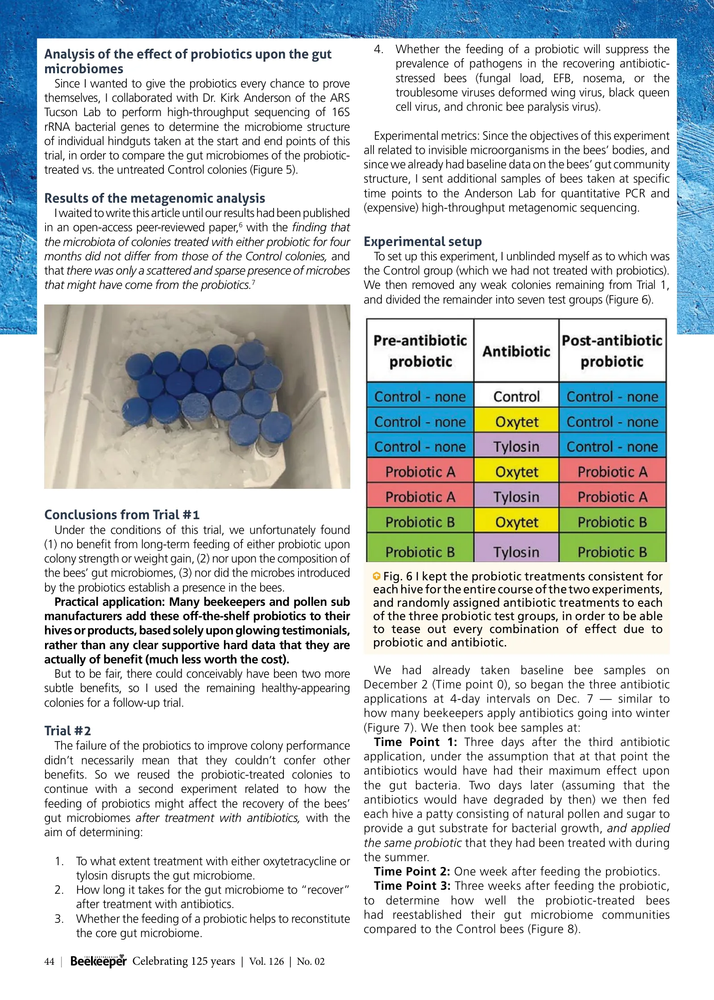

Analysis of the effect of probiotics upon the gut
microbiomes
Since I wanted to give the probiotics every chance to prove
themselves, I collaborated with Dr. Kirk Anderson of the ARS
Tucson Lab to perform high-throughput sequencing of 16S
rRNA bacterial genes to determine the microbiome structure
of individual hindguts taken at the start and end points of this
trial, in order to compare the gut microbiomes of the probiotic-
treated vs. the untreated Control colonies (Figure 5).
Results of the metagenomic analysis
I waited to write this article until our results had been published
in an open-access peer-reviewed paper,6 with the finding that
the microbiota of colonies treated with either probiotic for four
months did not differ from those of the Control colonies, and
that there was only a scattered and sparse presence of microbes
that might have come from the probiotics.7
Conclusions from Trial #1
Under the conditions of this trial, we unfortunately found
(1) no benefit from long-term feeding of either probiotic upon
colony strength or weight gain, (2) nor upon the composition of
the bees’ gut microbiomes, (3) nor did the microbes introduced
by the probiotics establish a presence in the bees.
Practical application: Many beekeepers and pollen sub
manufacturers add these off-the-shelf probiotics to their
hives or products, based solely upon glowing testimonials,
rather than any clear supportive hard data that they are
actually of benefit (much less worth the cost).
But to be fair, there could conceivably have been two more
subtle benefits, so I used the remaining healthy-appearing
colonies for a follow-up trial.
Trial #2
The failure of the probiotics to improve colony performance
didn’t necessarily mean that they couldn’t confer other
benefits. So we reused the probiotic-treated colonies to
continue with a second experiment related to how the
feeding of probiotics might affect the recovery of the bees’
gut microbiomes after treatment with antibiotics, with the
aim of determining:
1. To what extent treatment with either oxytetracycline or
tylosin disrupts the gut microbiome.
2. How long it takes for the gut microbiome to “recover”
after treatment with antibiotics.
3. Whether the feeding of a probiotic helps to reconstitute
the core gut microbiome.
4. Whether the feeding of a probiotic will suppress the
prevalence of pathogens in the recovering antibiotic-
stressed bees (fungal load, EFB, nosema, or the
troublesome viruses deformed wing virus, black queen
cell virus, and chronic bee paralysis virus).
Experimental metrics: Since the objectives of this experiment
all related to invisible microorganisms in the bees’ bodies, and
since we already had baseline data on the bees’ gut community
structure, I sent additional samples of bees taken at specific
time points to the Anderson Lab for quantitative PCR and
(expensive) high-throughput metagenomic sequencing.
Experimental setup
To set up this experiment, I unblinded myself as to which was
the Control group (which we had not treated with probiotics).
We then removed any weak colonies remaining from Trial 1,
and divided the remainder into seven test groups (Figure 6).
Fig. 6 I kept the probiotic treatments consistent for
each hive for the entire course of the two experiments,
and randomly assigned antibiotic treatments to each
of the three probiotic test groups, in order to be able
to tease out every combination of effect due to
probiotic and antibiotic.
We had already taken baseline bee samples on
December 2 (Time point 0), so began the three antibiotic
applications at 4-day intervals on Dec. 7 — similar to
how many beekeepers apply antibiotics going into winter
(Figure 7). We then took bee samples at:
Time Point 1: Three days after the third antibiotic
application, under the assumption that at that point the
antibiotics would have had their maximum effect upon
the gut bacteria. Two days later (assuming that the
antibiotics would have degraded by then) we then fed
each hive a patty consisting of natural pollen and sugar to
provide a gut substrate for bacterial growth, and applied
the same probiotic that they had been treated with during
the summer.
Time Point 2: One week after feeding the probiotics.
Time Point 3: Three weeks after feeding the probiotic,
to determine how well the probiotic-treated bees
had reestablished their gut microbiome communities
compared to the Control bees (Figure 8).
44 |
Celebrating 125 years | Vol. 126 | No. 02